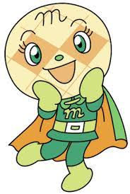

Melonpanna
Melonpanna (メロンパンナ) is one of the main characters in the Anpanman anime. She is one of Anpanman's allies
Description
Melonpanna is a bit shorter than the others but taller than Akachanman, and wears a dark green uniform with a light green belt, shoes and gloves. Her cape has a green top, but is orange underneath. She is made from melon bread, and has a cursive "m" marking on the dress. That also is the insignia on her uniform.
She has large green eyes and a small green nose, and two small orange cheeks at the far sides of her face. On her face are lines that cross over each other diagonally, three either way.
Personality
Melonpanna is very sweet and kind to everybody. She has super strength, but she doesn't like to fight. However, if push comes to shove, she won't hesitate to attack. She loves her older sister, Rollpanna, and often misses her.
Powers/Equipment
Melo-Melo Punch: Instead of causing harm, her special attack, Melo-Melo Punch, makes her enemies paralyzed with affection, or wakes people up form a deep sleep.
Melo-Melo Juice: Melonpanna can squeeze droplets of melon juice out of her head, which cures characters who have been made "black" by Baikinman's tricks. The only exception is when Baikinman has somehow taken the power of Rollpanna's good heart away from her, then the Juice has little to no immediate effect.
Abilities
Melonpanna has numerous abilites, though not all are fighting abilities:
She is able to call her sister.
She is also able to calm her sister down.
Like Anpanman, Currypanman, and Shokupanman, she can fly.